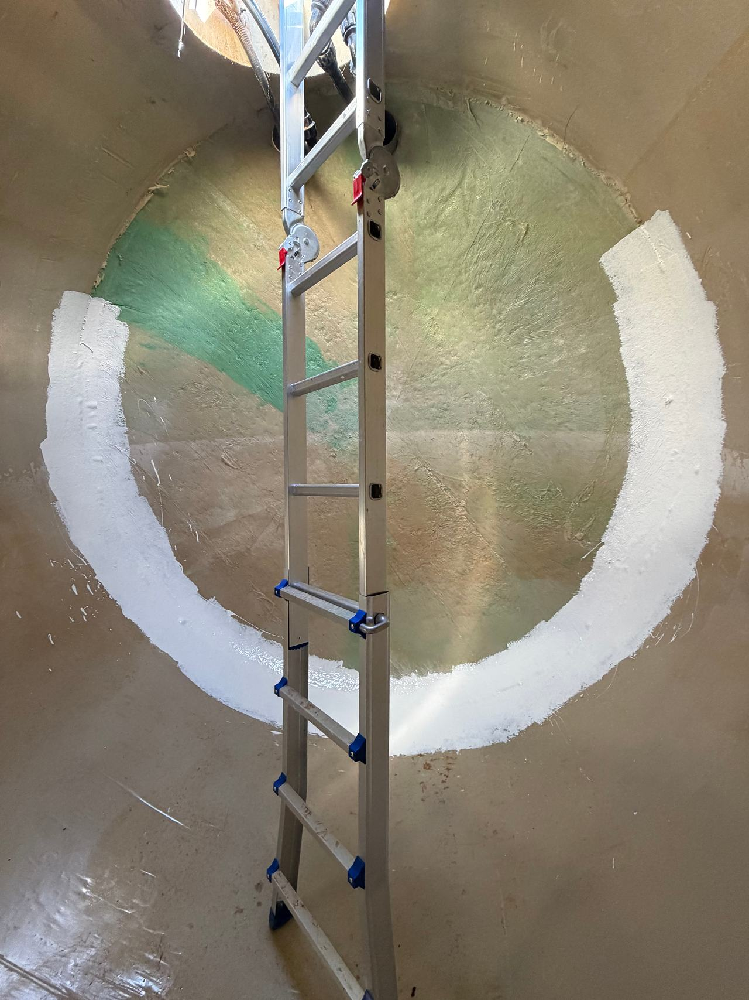

Pintura mural i decorativa a mida
Un mural a la sala d’estar, una entrada amb fals marbre, una botiga amb una paret que es recordi. El dibuixem amb tu, el provem en una mostra i el pintem a mà sobre la paret preparada.

Quatre maneres de vestir una paret
No totes les parets demanen un dibuix. De vegades n’hi ha prou amb una textura o un color treballat en capes.
- Mural a mida
- Un dibuix pensat per a aquella paret: un paisatge, un motiu geomètric, una il·lustració o el rètol d’un comerç. Es parteix d’un esbós i es trasllada a escala.
- Imitació de marbre i fusta
- Vetes i nusos pintats a mà, la tècnica dels vestíbuls i les escales dels edificis antics. Serveix per refer el que ja hi havia o per donar aquest caràcter a una entrada.
- Estucs
- Morters fins de calç o de guix treballats amb plana i brunyits, amb una brillantor suau i una profunditat de color que una pintura convencional no té.
- Veladures
- Capes de color transparent l’una sobre l’altra. El to canvia amb la llum i la paret deixa de semblar acabada de pintar.
Formació de muralista, ofici d’obra
El nostre responsable tècnic té formació de grau superior en Arts Aplicades al Mur: l’especialitat que ensenya a pintar, estucar i decorar parets amb les tècniques tradicionals. També ha estat professor de dibuix i ha treballat sis anys en una empresa especialitzada en edificis històrics.
Per això preparem la paret com en un edifici històric: si el suport té humitat o pintura solta, el mural més bonic acaba escrostonant-se.

Abans de pintar, es prova
La idea i l’espai
Mirem la paret, la llum que rep i els mobles que hi haurà al davant. Ens portes referències o partim de zero.
Esbós i mostra
Un esbós a escala i una mostra del color o de la textura. El que aproves és el que es pinta.
Preparació del suport
Reparació de fissures, eliminació de la pintura solta i un fons adequat a la tècnica.
Execució i protecció
Pintat a mà i, si la paret ha de patir fregaments o s’ha de netejar, una protecció final transparent.
Sobre pintura decorativa
Podeu pintar un mural en un comerç o un restaurant?
Sí. En els locals també pensem en l’ús: zones que es freguen, neteja freqüent i horaris per no tancar el negoci més del necessari.
Quant triga un mural?
Depèn de la mida, del nivell de detall i de la tècnica. Et donem el termini amb l’esbós, abans de començar.
Es pot recuperar una decoració antiga en lloc de pintar-ne una de nova?
Moltes vegades, sí: sòcols pintats, falsos marbres o sanefes d’escala es poden netejar, fixar i reintegrar. Ho expliquem a esgrafiats i pintura mural.
I si em canso del mural?
S’hi pot pintar a sobre com en qualsevol paret. Si porta protecció final, abans es poleix lleugerament perquè la pintura nova s’hi agafi bé.
Quina paret tens al cap?
Envia’ns una foto de la paret, les mides aproximades i alguna referència del que t’agrada. Amb això preparem un primer esbós.